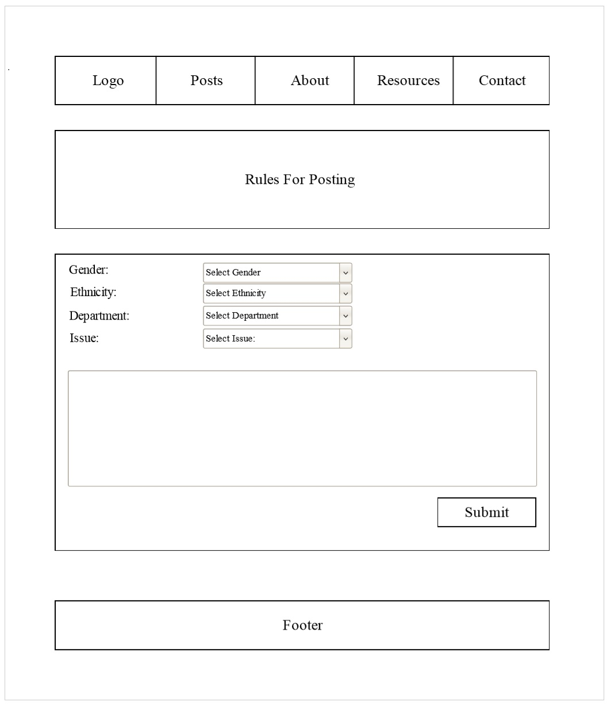

Anonymous Expressions Submission Site
by Brandon Falcone
Table of Contents
Client
Contextual Inquiry
Design
Usability Testing
Client
Myers-Lawson School of Construction, Virginia Tech
My client was the Faculty Principle of the Myers-Lawson School of Construction at Virginia Tech. Weekly meetings with our client took place to understand requirements, communicate project status, present user research and designs, submit progress reports, address concerns, ask questions, and plan deadlines.
Goal
The goal for this project was to make faculty at Virginia Tech feel more included and accepted by raising awareness of the damaging impact of microaggressions. To accomplish this, we developed a website that would allow faculty to submit anonymous posts concerning their experiences with microaggressions on campus.
Final Product

Contextual Inquiry
Research
Our target audience consisted of the faculty and staff within the college of engineering at Virginia Tech. Of the professors, 85% were male and 15% were female, of which 0.3% American Indian, 2% Black, 6% Hispanic, 21% Asian, 65% White, 0.3% Multiracial, and 7% non-resident alien.
User Roles
- Faculty Members
- College of Engineering
- Community Members
User Tasks
Faculty Members
- Submit posts on the website
- View posts
- View post analytics
College of Engineering
- View submitted posts on the website
- Moderate posts
- Manage moderators
- Manage website content
Community Members
- View submitted posts on the website
- View post analytics
Social Concerns
It was discovered that our initial design ideas that would allow users to select their gender between “male” and “female” was an act of microaggression against those who chose to identify as a non-binary gender. For a website aimed at bringing microaggressions to light, we needed to ensure we were not committing a microaggression through the website design.
Design
Site Map
The website is divided into two categories.
The main website (boxed in blue) is accessible by the public,
and the administration panel (boxed in red) is accessible
only by the admins and moderators.
The Home Page displays a few recent posts and a condensed version of the tag cloud.
The Posts Page displays all of the posts that have been submitted and approved by moderators. The most recently submitted posts appear at the top of the page. Buttons allow users to navigate through groups of 20 posts at a time. The Posts Page also displays a Twitter widget and tag cloud.
The Submit a Post Page contains a form for users to make posts. The form contains combo-boxes for selecting your gender, ethnicity, department, and a text-box for writing their story.
The Thank You for Your Post Page displays a “thank you” message confirming to the user that their post was successful.
The Analytics Page includes tools to help users study the submitted posts through bigrams, trigrams, tag clouds, and pie charts.
The About Page is devoted to educational purposes about the website and microaggressions.
The Resources Page contains links to relevant resources.
The Contact Us Page contains a form used for contacting admins and moderators.
Wireframes

Storyboard
Use Cases
We developed Use Cases for core website functionality detailing success scenarios, alternative user paths, and preconditions to help explain how the website should behave.
Use Case I – Submitting a post
Use Case II – Moderating a post
Use Case III – Searching the site
Use Case IV – Adding a moderator
Use Case V – Deleting a moderator
Use Case VI – Editing the website’s content
Usability Testing
Prototype
The prototype is a click-through website created using Marvel App. It simulates the core functionality needed for users to navigate the website, submit a post, and view posts, as well as the functionality for moderators to log in, view posts, and approve or flag posts. The scope for this prototype is limited to the user’s ability to accomplish specific tasks as well as freely navigating the website.
User Tasks
To determine if users are able to use, navigate, and understand the website as we anticipated, we formulated tasks for users to accomplish using the prototype. Users were given instructions for completing the tasks by interviewees while an observer took notes.
Faculty Member Tasks
- Fill out post form
- Fill out a post form with flagged content
- Locate the submitted posts
- Freely navigate the website
Moderator Tasks
- Moderate pending posts
- Add a moderator
- Freely navigate the administrator panel
Questions for Users
Bringing the user testing session to an end, users we asked several questions about their experience using the website and completing the tasks:
- "Was the website easy to navigate?"
- "How did you like the anonymity checker?"
- "How did you like the post approval process for admins?"
- "Is there anything you would like to see improved?"
Findings
Users did not take the time to read the “Rules for Posting” before filling out the post form. Users claimed the font-size was too small to read and too wordy. A 3-step process could be implemented that would first display the rules for posting, followed by the post form, followed by a review and submit page.
The alert message from the anonymity checker could be improved on to provide more detail to the user about what specific words from their post triggered the alert.
From the admin perspective, users suggested the ability to approve multiple pending posts at once instead of having to manually approve each post. A button was suggested that would approve all pending posts at once.